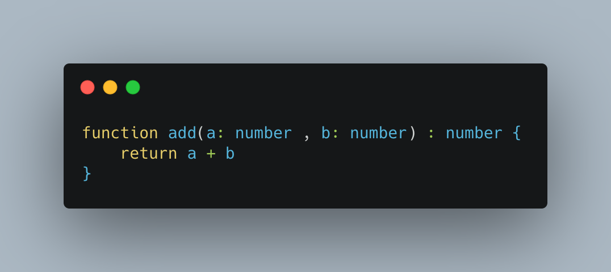

JavaScript es un lenguaje de programación que se utiliza para añadir elementos interactivos a la página web.
Es un lenguaje de programación que se puede aplicar a un documento HTML.
Con JavaScript puedes crear desde una simple Web hasta juegos y gráficos 3D.
JavaScript, fue inventado por Brendan Eich en mayo de 1995, quien era el cofundador del proyecto Mozilla, Mozilla Foundation y la Corporación Mozilla.
TypeScript es un lenguaje de programación construido a un nivel superior que JS. Esto quiere decir que Typescript dota al lenguaje de varias características adicionales que hacen que podamos escribir código con menos errores, más sencillo, etc. en definitiva,más limpio y sólido.
Fue creado por microsoft en 2012, y Google lo adoptó como su lenguaje por defecto para desarrollar con Angular.
Como TypeScript es un superconjunto de JavaScript, todo el código escrito en JS es válido para TS, pero NO lo contrario.
Características |
JavaScript |
TypeScript |
|---|---|---|
| Tipados | No existen aunque se pueden simular | Lenguaje fuertemente tipado, donde se pueden crear tipos genéricos o interfaces |
| Modularización | Através de ECMAScript 6 | Soporte directo para módulos |
| Tuplas | No las soporta | Si las soporta |
| Orientación a objetos | Más compleja | Similar a otros lenguajes de programación como Java o C# |
| Interfaces | No existe soporte para las interfaces | Son imprescindibles |
En proyectos pequeños, usar TypeScript es un poco brusco, por lo que quizá no merezca la pena.
En proyectos medianos o grandes, y sobre todo en un equipo de desarrollo, escribir código en TS ofrece grandes ventajas que se van a notar a corto y a largo plazo.
Si trabajas con frameworks, usar TypeScript es casi una obligación. A esto hay que sumarle que en todas las empresas de desarrollo software los principales proyectos utilizan alguno de estos frameworks o librerías.
Aunque los más recomendable en caso de duda es aprender TS, ya que a nivel profesional es un lenguaje más útil. Además de llevarte el aprendizaje de JS y una base muy sólida para el uso de Angular.